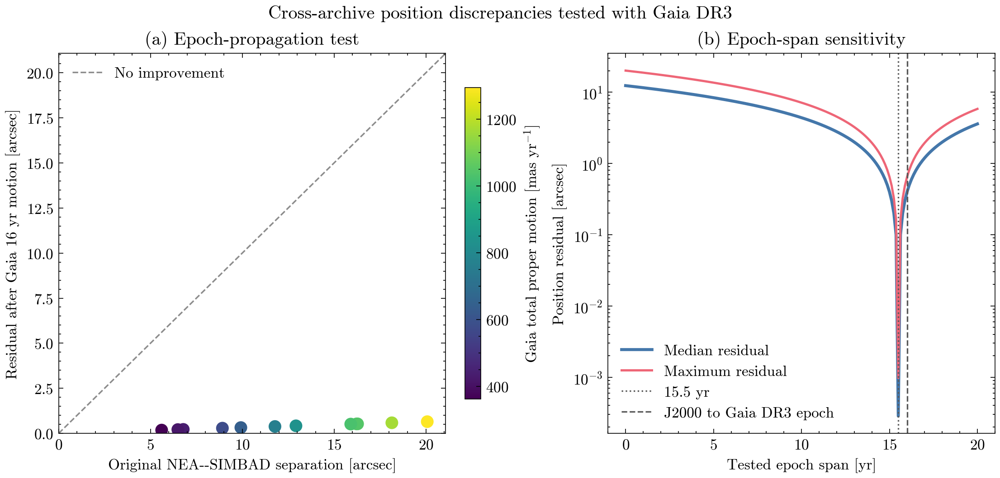
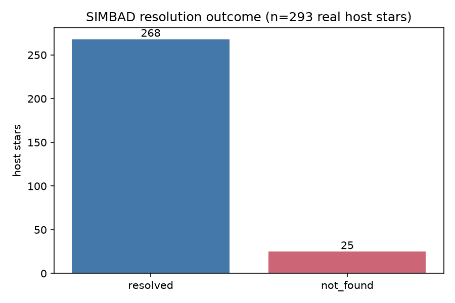

Data source notes
SHA-256, LF-normalised text
42bc0e04f9eb12efeea1fb30f941b41b0367493945e6e22efcfb390ac08749c6Browse 15 versioned evidence files. Table previews simply display stored rows. Consult the project report for the source, processing steps, and inference assumptions.


42bc0e04f9eb12efeea1fb30f941b41b0367493945e6e22efcfb390ac08749c67c1ba770324485fb0b3b5c7ffc31e24f8403c57dbb438a5bc9df3c4f0737c6b47f08d5a1efab0068e89ae48111deec8092d5a280df412b19ee92b949f59d6d37f7fe34ef2d9887fd7d94cf8aa46a1204b78c1e370f61816146325ee8f1d0e0cc| source_id | ra | dec | pmra | pmdec | ref_epoch | ra_error |
|---|---|---|---|---|---|---|
| 4848140361962951552 | 54.00339387736301 | -44.51436231604776 | 745.6543400042402 | -373.3232809136534 | 2016.0 | 0.026093582 |
| 4634528720388462592 | 4.063774501401125 | -79.85142960812378 | 434.10486443632266 | -56.339342290818315 | 2016.0 | 0.018354405 |
| 4634528720387797120 | 4.062898388828774 | -79.8503334744852 | 416.75105854843224 | -51.126124585760515 | 2016.0 | 0.08522794 |
| 577602496345490176 | 133.78195701408768 | 1.5418558693942335 | 44.94399530668833 | -1045.8758431663468 | 2016.0 | 0.014259793 |
9bb48c5449f396a72b0ff6ca1ba8c5fd0469a9a7abb5ed1c373385b98e1dc67a6c0d81106006a53bafb33cd1e45c405c735a3f8693bcd0f9d2e38a5a088099d3c33ca99973942a51711957ccf0e1a0bf720b776dcffaa042005ab23d063586c5d18800c4f053dc549dde7dbee477ab57822921709788c8aaa0d0b95616dcd4d5| epoch_span_years | median_residual_arcsec | maximum_residual_arcsec |
|---|---|---|
| 0.0 | 12.353006226573669 | 20.078151148023068 |
| 0.125 | 12.253383685862174 | 19.916230721752424 |
| 0.25 | 12.153761145150842 | 19.754310295481844 |
| 0.375 | 12.054138604439679 | 19.59238986921132 |
f700c2b7106838e04ac80cf57f9843db0738d7babbea645298a9cd9225500256| hostname | source_id | status | original_separation_arcsec | gaia_total_pm_mas_per_year | implied_epoch_span_years | fixed_16yr_residual_arcsec |
|---|---|---|---|---|---|---|
| HD 285968 | 3409711211681795584 | validated | 20.078151148023068 | 1295.363410194817 | 15.500014119240236 | 0.6476634296934554 |
| GJ 876 | 2603090003484152064 | validated | 18.148384803192293 | 1170.8783593172552 | 15.499803765233088 | 0.5856689720099065 |
| GJ 674 | 5951824121022278144 | validated | 16.280707665107954 | 1050.3620289868477 | 15.500091600223339 | 0.5250848759878575 |
| GJ 328 | 577602496345490176 | validated | 16.226133557063083 | 1046.8410777348415 | 15.500092516605996 | 0.5233237503704808 |
783eec47926b6855c6542e923e93fa3222f9fab90da7dac3cb5aff73cfaf3e34| hostname | ra | dec | resolved | resolution_status | simbad_main_id | simbad_ra |
|---|---|---|---|---|---|---|
| 24 Sex | 155.8684866 | -0.9023998 | True | resolved | * 24 Sex | 155.86820753396 |
| 2MASS J04414489+2301513 | 70.4371079 | 23.0308544 | True | resolved | 2MASS J04414489+2301513 | 70.43707110527 |
| 2MASS J22362452+4751425 | 339.1025931 | 47.861683 | True | resolved | PM J22364+4751 | 339.10219092657 |
| AB Pic | 94.8039208 | -58.0541184 | True | resolved | HD 44627 | 94.80380435413 |
2a00978e7f8eb80c1c1f8db74ed384a0a03735f8c60d106151dec6a20fe73e0a| hostname | ra | dec | resolved | resolution_status | simbad_main_id | simbad_ra |
|---|---|---|---|---|---|---|
| GJ 1061 | 54.0032486 | -44.5143104 | True | resolved | L 372-58 | 53.998746505525006 |
| GJ 3021 | 4.0634323 | -79.8514218 | True | resolved | HD 1237 | 4.052825044784584 |
| GJ 328 | 133.7819507 | 1.5420011 | True | resolved | BD+02 2098 | 133.78175719021206 |
| GJ 674 | 262.1700476 | -46.8989826 | True | resolved | CD-46 11540 | 262.16643990898785 |
bee20ff24ed973b9f17e5846accc9345e7b463dc3b108784cdb7ab87bd1243ef3280df59e2710ca0d0a306042b8647f05338a29f429f7c9750835ca01d51db3ae96243342462548adf5501eceee8d61db421bb207f700d77b53f1d4efeafbc21c86df13eb3d9d296b6dcbe90290c595d5c7af9524f2e4178a48133a502db70adSHA-256 values verify the stored files. They do not independently validate the scientific analysis. Rebuild this page with python scripts/evidence_catalog.py followed by python scripts/render_evidence_page.py.